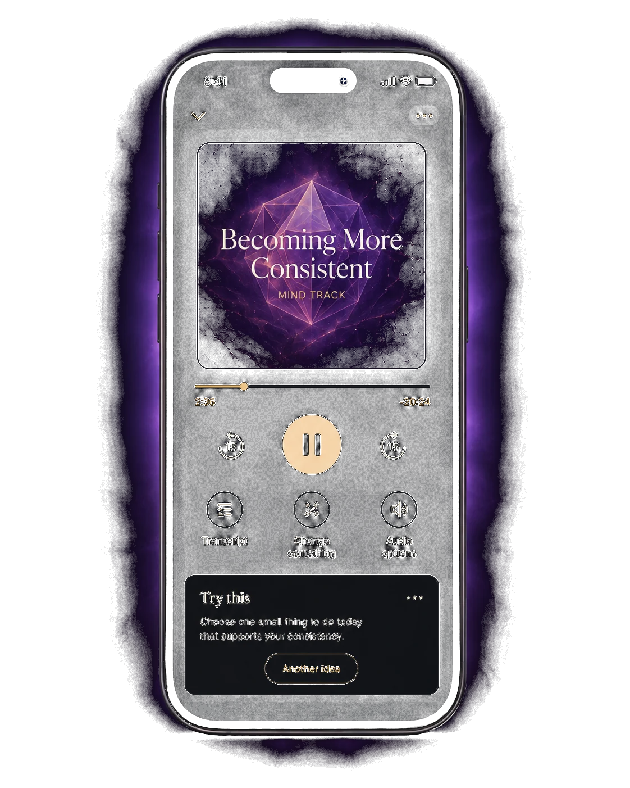
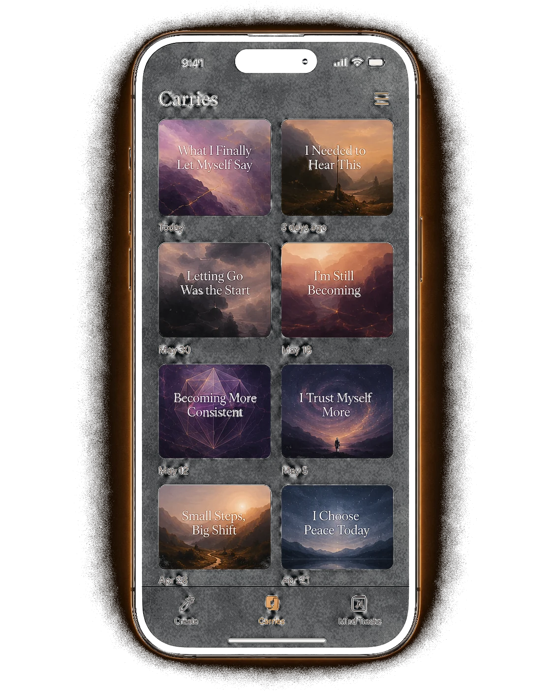
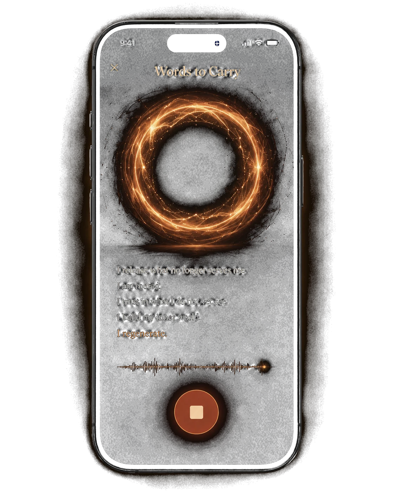
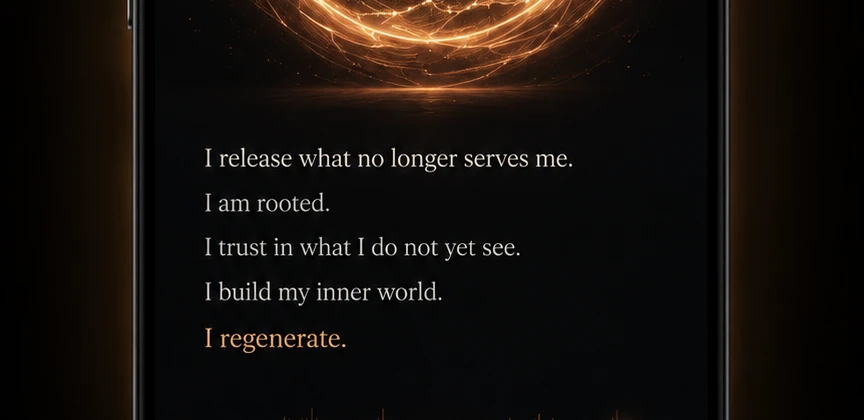
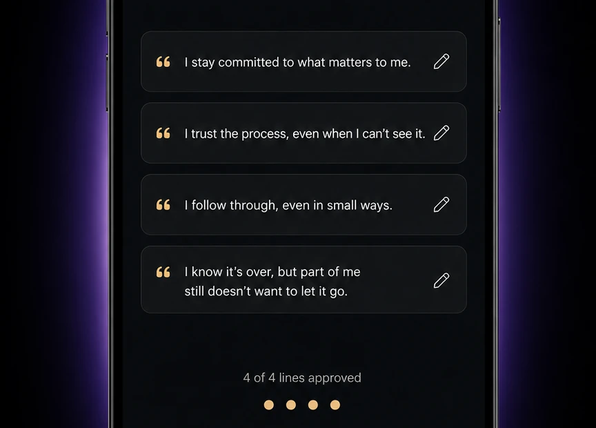
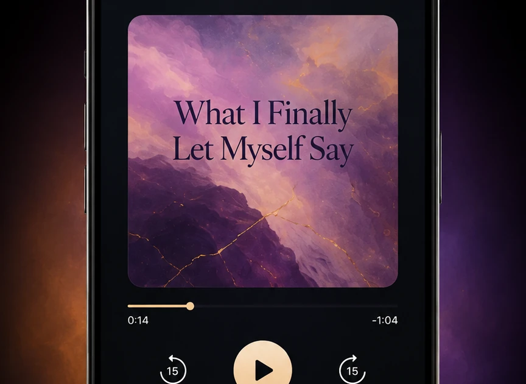
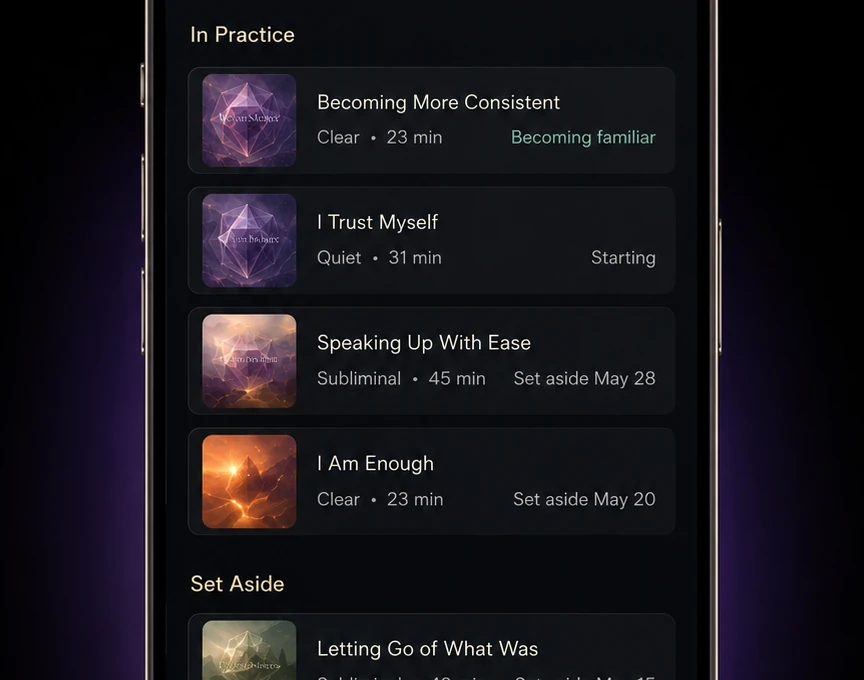
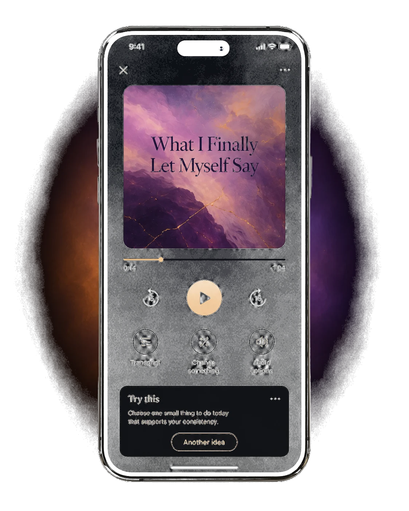
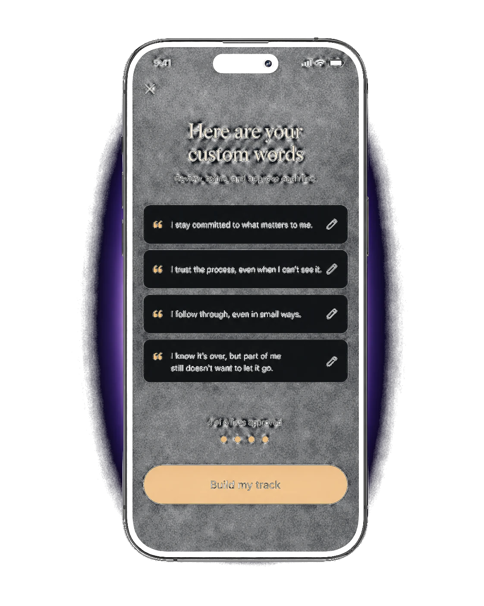

What I Finally Let Myself Say
2:14I can miss what was and still make room for what comes next.
I don’t need to rush the part of me that is still letting go.
I can keep moving without pretending it didn’t matter.
Speak or write what’s on your mind. InnerReset transforms real expression into private, personalized audio you can keep, return to, and build from.



Some things you say once — and need to hear again. InnerReset turns a moment of honesty into a finished piece of audio: your words, refined with you, voiced beautifully, kept private.
Every move adds your say, your approval, or a finished piece you can keep.
Out loud or in writing — say what happened, what hurts, what’s unfinished.
“I know it’s over, but part of me still doesn’t want to let it go.”

InnerReset drafts the exact lines you’ll hear. You review, refine, and approve every word — nothing is voiced that you didn’t sign off.

A finished, voiced piece — titled, artworked, and yours. Choose how it sounds and how it’s read.

Save it to your private library. Return when it matters — tomorrow, or in a year.

What begins as a moment leaves as something finished.
I can miss what was and still make room for what comes next.
I don’t need to rush the part of me that is still letting go.
I can keep moving without pretending it didn’t matter.
Every session ends in something finished: a titled, artworked piece of audio in your library. Play it on the walk home. Save it for the hard day. It’s yours, permanently.
Two ways to create. Two private libraries. One place to begin.
For the moment you’re in. Say what’s happening; receive one finished voiced Carry for exactly that.

For the direction you’re practicing. Set an intention, approve your exact lines, and receive a Mind Track built from them.

Carries meet you where you are today. Mind Tracks are the long game — the same approved words, practiced until they’re familiar. Your library shows how far you’ve come: what you set aside, what you’re still becoming.
Give InnerReset something real.
Receive something worth keeping.
Made for the version of you who shows up at 1 a.m.
InnerReset is built around personal artifacts, not public performance. Your words stay under your control.
“I built InnerReset because some feelings don’t need advice — they need somewhere to go, and something to come back to. No feed. No streaks. Just your words, made worth keeping. If that’s what you’ve been missing, I’d love you in early access.”
— the founder of InnerReset
Early access is a small first cohort, built for real use and direct feedback.
A place in the first iOS cohort via TestFlight, full Words-to-Carry and Mind-to-Build access while we refine, and a direct line to the maker.
No. InnerReset is a private space for expression and return — it doesn’t diagnose, treat, or replace professional care.
InnerReset is private by default, with no feed. Your library is yours.
Early access is free. Pricing will be announced with the public launch.
iOS comes first. Tell us where you’d like us to build next.